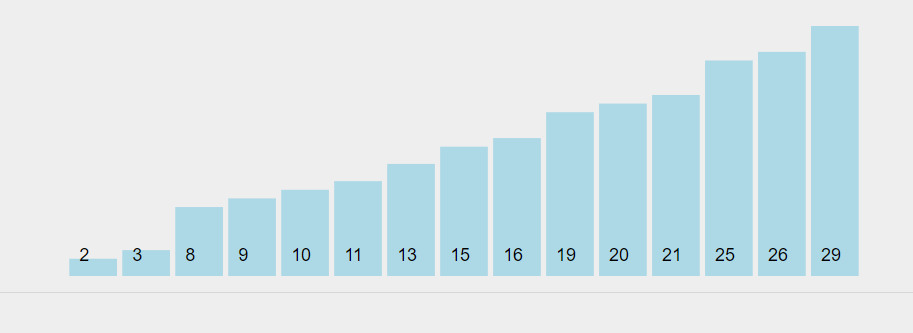

Linear Search is defined as a sequential search algorithm that starts at one end and goes through each element of a list until the desired element is found, otherwise the search continues till the end of the data set.
How Linear Search Works?
- Step 1: First, read the search element (Target element) in the array.
- Step 2: Set an integer i = 0 and repeat steps 3 to 4 till i reaches the end of the array.
- Step 3: Match the key with arr[i].
- Step 4: If the key matches, return the index. Otherwise, increment i by 1.
complexity analysis of linear search
- Best case: In the best case, the key might be present at the first index. So the best case complexity is O(1).
- Average case: O(N)
- Worst case: In the worst case, the key might be present at the last index i.e., opposite to the end from which the search has started in the list. So the worst case complexity is O(N) where N is the size of the list.
- Space complexity: O(1) as except the variable to iterate through the list, no other variable is used.
Illustration of Linear Search:
Consider an array as arr[]= [2 3 8 9 10 11 13 15 16 19 20 21 25 26 29] and the target key=25 - Step 1: Set i = 0 and check target with arr[0] i.e. first element of an array.
- Step 2: Target and arr[0] are not the same. So make i = 1 and match key with arr[1].
- Step 3: arr[1] and target are different. Increment i and compare key with arr[2].
- Step 4: arr[2] is not the same with target. Increment i and compare key with arr[3].
- Step 5: Target and arr[3] are different. Make i = 4 and compare key with arr[4].
- Step 6: Target and arr[4] are not same. Make i = 5 and match key with arr[5].
- Step 7: Repeats the same steps until arr[i] matches the target.
- Step 8: when i=11, arr[11] matches target. Hence, given target element is present in an array arr[] at index 11.
>>Try Visualization By Yourself